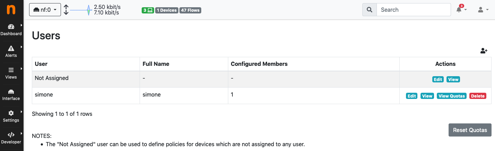
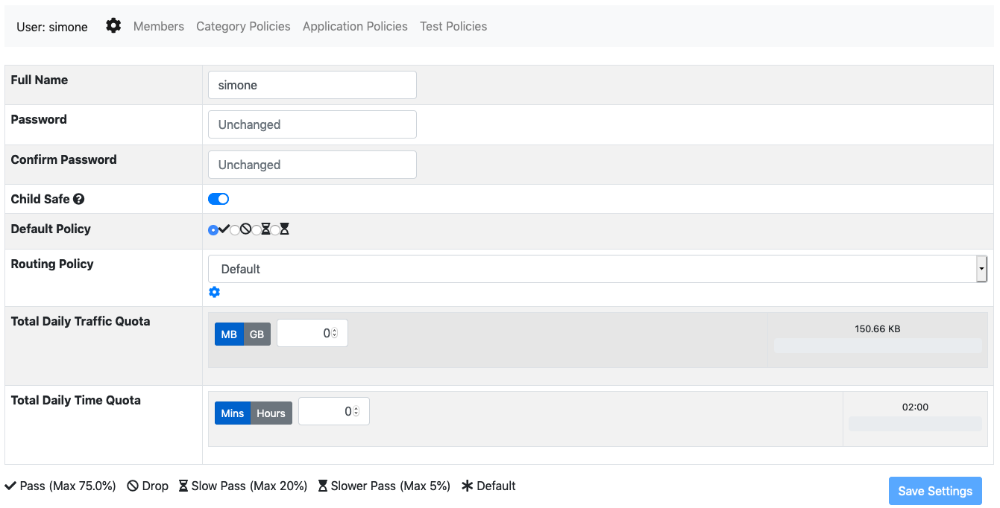
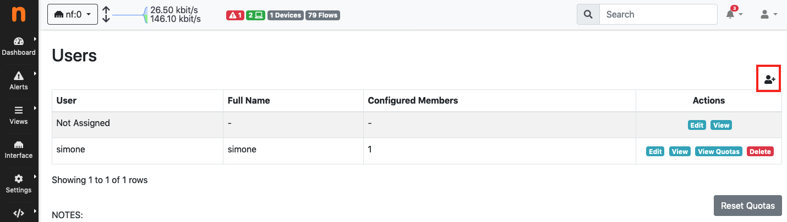
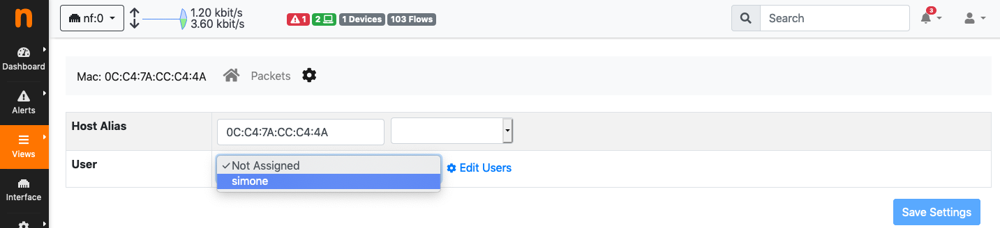
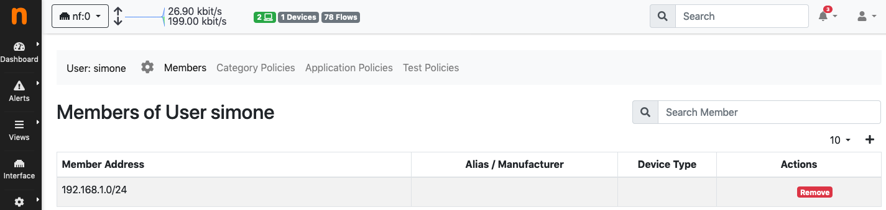

Пользователи
nEdge использует концепцию пользователи группировать устройства вместе.

Страница конфигурации пользователя
В зависимости от конкретного контекста пользователь может использоваться либо для представления реальный человек или группа людей. Например, в домашней среде пользователь «Майк» может быть создан для обозначения реального человека. В этом случае пользователь будет сгруппируйте устройства Майка вместе. Однако в корпоративной сети пользователь «сотрудник» целесообразнее было бы сгруппировать устройства всех сотрудников.
В nEdge Не назначено user — специальный пользователь, который группирует все новые устройства. Его можно использовать для определения политик «по умолчанию», которые будут применяться, например, к неизвестным устройствам. Это работает только в том случае, если авторизованный портал отключен, в противном случае трафик неназначенных устройств будет заблокирован до надлежащей аутентификации.
Конфигурация пользователя
Конфигурация пользователя включает следующую информацию:
Флаг, указывающий, если Безопасно для детей включен у пользователя
Конфигурация пользовательской политики (резервная политика, общие квоты)
Политики для каждого протокола и категории
Политика маршрутизации пользователей (только в режиме маршрутизатора)

Страница конфигурации пользователя
Безопасно для детей опция включает защиту от детей для указанного пользователя, блокируя сайты для взрослых. Более подробную информацию о политиках можно найти на странице политика раздел.
Назначение устройств пользователю
При создании пользователя пользователь и пароль поля будут использоваться в качестве доступа учетные данные для аутентификации пользователя портала авторизации. После успешной аутентификации устройство будет добавлено к указанному пользователю.

Добавить нового пользователя
Устройство также можно назначить конкретному пользователю вручную, введя его имя. страницу в nEdge и выбрав пользователя из раскрывающегося списка пользователей.

Назначение устройства пользователю вручную
Также можно выкинуть устройство из портала авторизации и принудительно создать новое. аутентификацию путем назначения устройства пользователю «Не назначено».
Сегментация сети
Применение политик к отдельным устройствам может быть затруднено в большой или динамической сети. Эту проблему можно решить, включив пленный портал и обеспечение аутентификации устройств через это. Однако в некоторых случаях желательно избегать отображения авторизованного портала. совсем не например для внутренней сети. В этом случае сеть ЛВС должна быть сегментирована. с помощью маршрутизаторов и nEdge, настроенных должным образом для включения всех сегментов локальной сети через сеть CIDR. Вот пример.

Сегментация локальной сети
В этом примере все устройства, подключенные к частной точке доступа, должны иметь возможность для доступа в Интернет без аутентификации на портале авторизации, тогда как устройства, подключающиеся для доступа к публичной точке доступа необходимо пройти аутентификацию. Используя два маршрутизатора для сегментации сети LAN, теперь можно идентифицировать группы устройств по их сетевым адресам. В частности, частная сеть обозначается знаком CIDR. 192.168.1.0/24 тогда как общественная сеть по 192.168.0.0/24. На странице управления пользователями теперь можно создать пользователя «частный», а затем добавить сеть 192.168.1.0/24 своим членам.

Привязка частной локальной сети к пользователю
Все устройства с IP-адресом внутри 192.168.1.0/24 теперь будет частью Пользователь «simone», поэтому для него не будет отображаться портал авторизации.
Примечание
Сеть LAN теперь состоит из двух подсетей. Чтобы правильно идентифицировать оба подсети как локальные в nEdge, необходимо установить соответствующий CIDR в LAN конфигурация сети для включения обеих подсетей (/23 в этом случае).
Программная конфигурация
Конфигурация пользователей, политик и ассоциаций/отключений между устройствами также может быть сделано программно.
Конфигурация пользователей и политик
Пользователей и политики можно настроить программно, обслуживая ntopng Край конфигурации JSON.
Конфигурация JSON имеет следующую структуру
{
"users": {...},
"associations": {...},
}
На самом внешнем уровне иерархии есть два ключа, а именно:
users и associations. Первый ключ используется для
создавать пользователей и указывать их политики, тогда как последнее используется для
привязать устройства к созданным пользователям.
users
Значение этого ключа должно быть объектом JSON с zero или более. пары ключ-значение:
Ключи — это имена пользователей, выбранные для пользователей.
Значения — это другие объекты, каждый из которых несет конфигурацию для пользователя, указанного в ключе.
В следующем фрагменте на примере представлена пара ключ-значение. с конфигурацией для пользователя с именем Майна
"maina" : {
"full_name": "Maina Bar",
"password": "ntop0101",
"routing_policy": "crew",
"default_policy": "pass",
"policies" : {
10 : "slow_pass",
"Facebook": "slower_pass",
"MyCustomProtocol": "drop",
"YouTube": "drop"
}
}
Пользовательская конфигурация — это объект JSON, который должен содержать следующие ключи:
full_name: полное имя (например, имя и фамилия) пользователь.password:: пароль, который пользователь должен будет отправить Captive-портал для доступа в Интернет. Это поле не используется, когда захватывающий портал выключен.routing_policy: В случае конфигурации многопутевой маршрутизации, с несколькими интерфейсами WAN это имя маршрутизации Политика, которая будет применена к пользователю.default_policy: Политика, которую следует использовать в качестве крайней меры, т.е. когда нет другой политики вpoliciesматчи.policies: объект JSON, содержащий zero или более значений ключа. сочетается с приложениями в качестве ключей и политиками в качестве ценности. Ключ приложения можно указать либо с помощью его строки имя, а также использовать его целочисленный идентификатор.
Политики находятся в однозначном отношении к классам пропускной способности.
объясняется в разделе «Управление полосой пропускания». Также есть доп.
drop политика для блокировки соответствующего трафика. Доступны четыре политики:
passslow_passslower_passdrop
associations
Значение этого ключа должно быть объектом JSON с zero или более. пары ключ-значение:
Ключи — это Mac-адреса устройств, которые необходимо связать.
Значения — это другие объекты, каждый из которых содержит имя пользователя, которое будет использовать устройство. быть связанным с чем-л.
Пример объекта ассоциации JSON следующий:
"associations" : {
"DE:AD:BE:EE:FF:FF" : {"group" : "maina" , "connectivity" : "pass"},
"11:22:33:44:55:66" : {"group" : "maina" , "connectivity" : "pass"}
}
Здесь, group указывает имя пользователя и connectivity есть
не используется и должен оставаться в pass. connectivity будет
становятся значимыми при создании ассоциаций во время выполнения
как показано в Конфигурация ассоциаций времени выполнения.
Полный пример конфигурации JSON можно найти по адресу https://github.com/ntop/ntopng/blob/dev/tools/serve_bridge_config.py
Обслуживание конфигурации
Конфигурация JSON должна быть передана на ntopng Edge через Интернет. сервер. ntopng Edge на ранних этапах запуска подключится к веб-серверу для прочитайте JSON и примените конфигурацию.
Пример веб-сервера, обслуживающего ntopng Edge конфигурацию JSON. доступен по адресу https://github.com/ntop/ntopng/blob/dev/tools/serve_bridge_config.py
Примечание
Чтобы дать указание ntopng Edge получить конфигурацию JSON, переменная
http_bridge_conf_utils.HTTP_BRIDGE_CONFIGURATION_URL в
файл http_bridge_conf_utils.lua необходимо редактировать вручную, чтобы
укажите адрес и порт сервера.
Например, чтобы подключиться к серверу на localhost слушаю
для соединений по порту 8000, переменная должна быть
изменен на http_bridge_conf_utils.HTTP_BRIDGE_CONFIGURATION_URL = "localhost:8000".
Предупреждение
Во время запуска, непосредственно перед применением конфигурации JSON, ntopng Edge сбрасывает все существующие настроенные пользователи, их политики и все определенные приложения.
Конфигурация ассоциаций времени выполнения
Связывание участников с их пулами хостов выполняется во время выполнения с помощью
ntopng Конечная точка края /lua/admin/manage_pool_members.lua.
Действительный JSON должен быть POST ed к этой конечной точке. JSON это
точно associations объект подробно описан выше.
Например, с помощью Curl можно связать/отсоединить устройства с пользователями следующим образом:
curl -H "Content-Type: application/json" -X POST -d '{"associations" : { "DE:AD:BE:EE:FF:FF" : {"group" : "maina" , "connectivity" : "pass"}, "AA:BB:CC:DD:EE:FF" : {"group" : "simon" , "connectivity" : "reject"}}}' "http://devel:3000/lua/admin/manage_pool_members.lua"
На этот раз, connectivity может принимать два значения:
passсвязывает Mac-адрес с пользователем, указанным вgroup.rejectотсоединяет Mac-адрес от пользователя, указанного вgroup.
Конечная точка отвечает статусом каждой настроенной ассоциации. Статус можно использовать для определения наличия ассоциации/диссоциации. завершилось успешно.